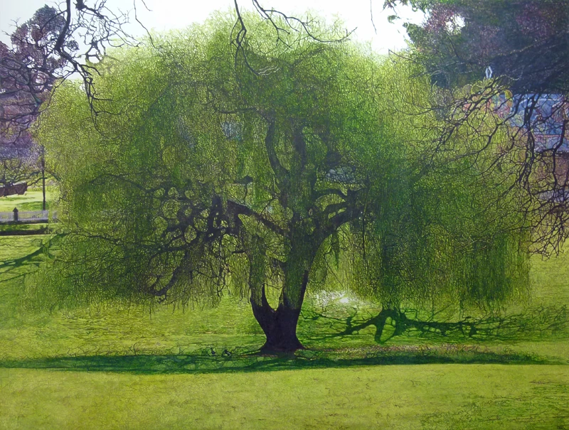
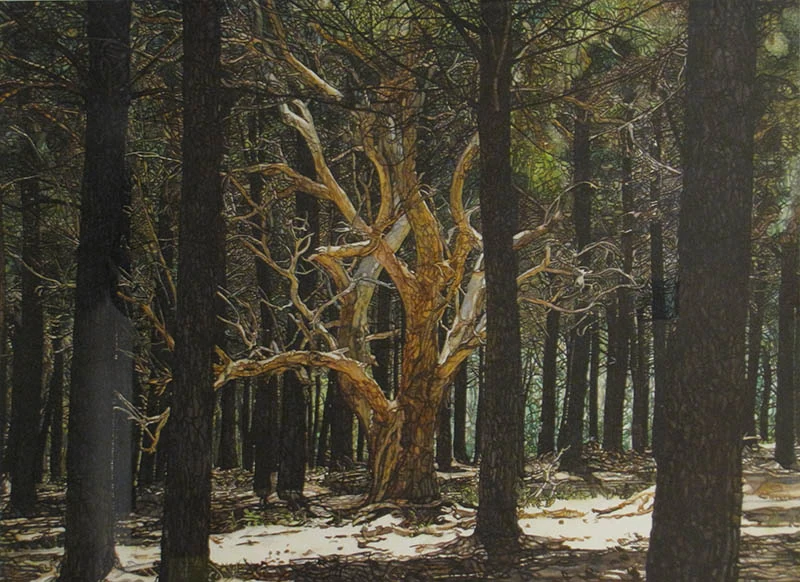
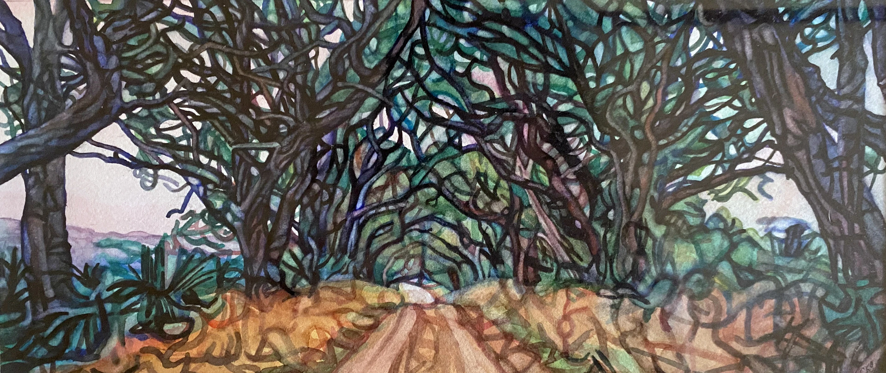
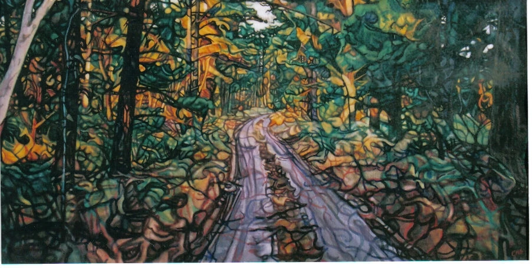
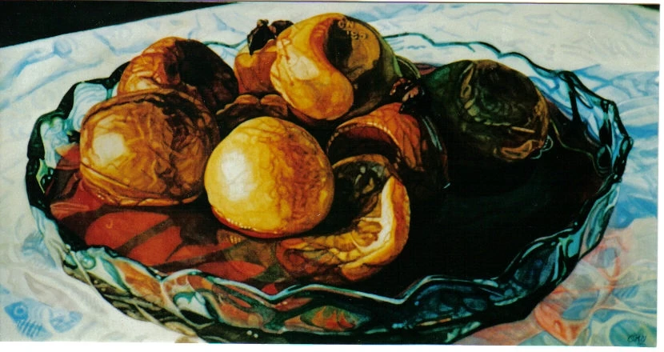

 i. Willow on the South Lawn Watercolour & ink on Arches · 76 × 56 cm · 2024 "The willow began to weep in late April; I painted it for three mornings before the leaves filled in."
 ii. The Forest in Late Winter Watercolour on cotton · 64 × 48 cm · 2023 "The oak survives because the pines around it die first. Their bones make the light it stands in."
 iii. Bridle Road, October Gouache & pencil on paper · 72 × 30 cm · 2023 "A study for a larger work that I never made. The road kept walking away from me."
 iv. Hedgerow, Gothic Watercolour on Saunders · 110 × 48 cm · 2022 "The hedgerow at the back of the orchard. I think of it as a cathedral that grew on its own."
 v. Burgundy Peaches in a Cut‑Glass Bowl Oil on prepared linen · 40 × 60 cm · 2021 "My mother's bowl, my mother's peaches. Painted the week she stopped recognising them."